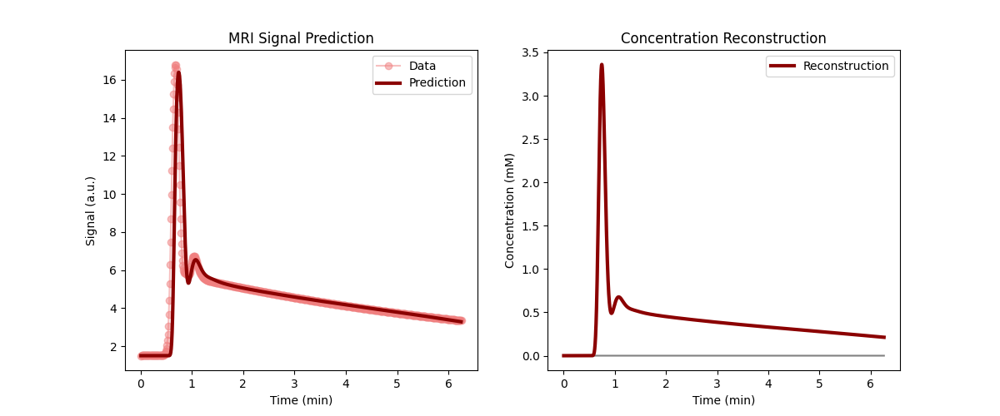

Note
Go to the end to download the full example code.
Cardiac output#
This tutorial illustrates how the Aorta model InverseAorta
can be used to measure the cardiac output from an arterial input
function (AIF).
An AIF is typically used in DC-MRI to derive input concentrations for a tissue model. However, the AIF signal also encodes properties of the circulation, which can be derived by fitting a model of the circulation to the AIF.
We will illustrate the idea by measuring the (average) cardiac output of
subjects used to derive a popular literature-based input function
from Parker et al 2006.
It is implemented in dcmri as the function aif_parker and the
module Parker.
We’ll start by importing the package:
import dcmri as dc
… and generating the population-average AIF. We use the default settings from the original paper, so no need to provide arguments:
In order to apply the module InverseAorta, we need to
first configure it, and then set the input parameters.
The default configuration
is mostly fine but we will choose a chain model for the heart-lung
system to create a more realistic first pass. Since the data are
acquired over several minutes we will allow for extravasation in
the organs, and we will also allow measured values for the blood
relaxation so we don’t have to rely on preset literature values:
aorta = dc.InverseAorta(
heartlung='chain',
organs='2cxm',
baseline='measured',
)
Most inputs, such as sequence parameters, are already returned as part of the aif, so we only need to provide values for the missing inputs. Let’s see what they are:
missing_data = aorta.inputs() - aif.keys()
dc.print_quantities(missing_data)
+-------------------------------------------------------------------------------------------------------------------------------------------------+
| Quantities |
+----------------+-------+----------+--------------------------------------------------------+-----------------+--------------+-------+-----------+
| Key | Value | Unit | Name | Group | Bounds | DICOM | OSIPI |
+----------------+-------+----------+--------------------------------------------------------+-----------------+--------------+-------+-----------+
| B1corr | 1 | | B1-correction factor | electromagnetic | (0, 5) | | |
| me | 1 | A cm2/mL | equilibrium magnetization | electromagnetic | (0, 5) | | |
+----------------+-------+----------+--------------------------------------------------------+-----------------+--------------+-------+-----------+
| dose_tolerance | 0.1 | | dose tolerance | hyperparameters | | | |
+----------------+-------+----------+--------------------------------------------------------+-----------------+--------------+-------+-----------+
| pfree | None | a.u. | set of free parameters | inverse problem | | | |
+----------------+-------+----------+--------------------------------------------------------+-----------------+--------------+-------+-----------+
| CO | 100 | mL/sec | cardiac output | physiological | (0, 500) | | |
| D_hl | 0.2 | | transit time dispersion in the heart and Lungs | physiological | (0.01, 0.99) | | |
| E_or | 0.15 | | extraction fraction in the organs | physiological | (0, 0.5) | | Q.PH1.005 |
| T_b_or | 20 | sec | mean transit time in blood of the organs | physiological | (0, 60) | | Q.PH1.006 |
| T_e_or | 120 | sec | mean transit time in extracellular space of the organs | physiological | (0, 800) | | Q.PH1.006 |
| T_hl | 10 | sec | mean transit time in the heart and Lungs | physiological | (0, 30) | | Q.PH1.006 |
| vr_or | 0.9 | | Venous return in the organs | physiological | (0, 1) | | |
+----------------+-------+----------+--------------------------------------------------------+-----------------+--------------+-------+-----------+
| nb | 1 | a.u. | number of baseline time points | signal | | | |
+-------------------------------------------------------------------------------------------------------------------------------------------------+
The physiological parameters will be derived by the function, so we can leave them to their defaults; for the other parameters the defaults are OK too, so no need to make changes
We can now fit the model to the data:
Iteration Total nfev Cost Cost reduction Step norm Optimality
0 1 1.4499e+03 1.21e+04
1 2 2.4099e+02 1.21e+03 1.63e-01 1.81e+03
2 3 3.2683e+01 2.08e+02 1.26e-01 2.96e+02
3 4 4.8157e+00 2.79e+01 2.01e-01 2.56e+02
4 5 2.4004e+00 2.42e+00 5.80e-02 1.22e+01
5 6 2.1460e+00 2.54e-01 1.55e-01 6.45e+01
6 7 1.6786e+00 4.67e-01 4.61e-02 6.62e+00
7 9 1.5979e+00 8.08e-02 6.28e-02 8.66e+00
8 10 1.5239e+00 7.40e-02 1.30e-01 5.83e+01
9 11 1.4331e+00 9.07e-02 3.31e-02 6.22e-01
10 13 1.3967e+00 3.65e-02 4.85e-02 6.90e+00
11 14 1.3468e+00 4.98e-02 9.46e-02 2.99e+01
12 15 1.3261e+00 2.08e-02 2.71e-02 1.48e+00
13 16 1.3033e+00 2.28e-02 8.27e-02 2.78e+01
14 17 1.2978e+00 5.52e-03 5.26e-03 1.19e-01
15 18 1.2915e+00 6.25e-03 4.12e-02 6.47e+00
16 19 1.2911e+00 3.99e-04 2.80e-03 1.84e-02
17 20 1.2901e+00 9.65e-04 1.30e-02 6.71e-01
18 21 1.2897e+00 3.88e-04 1.10e-02 1.26e+00
19 22 1.2896e+00 1.57e-04 1.74e-03 1.88e-01
20 23 1.2896e+00 3.39e-05 7.86e-04 7.36e-02
21 24 1.2895e+00 1.49e-05 5.05e-04 1.13e-01
22 27 1.2895e+00 5.19e-06 9.21e-05 2.03e-02
23 28 1.2895e+00 3.11e-07 1.57e-04 2.39e-02
24 29 1.2895e+00 7.73e-07 3.16e-05 7.36e-03
25 30 1.2895e+00 2.31e-07 6.31e-05 1.88e-02
26 32 1.2895e+00 1.13e-07 2.18e-05 3.04e-03
27 33 1.2895e+00 7.02e-09 2.32e-06 2.61e-04
`ftol` termination condition is satisfied.
Function evaluations 33, initial cost 1.4499e+03, final cost 1.2895e+00, first-order optimality 2.61e-04.
Before we look at the results, let’s check that the fit has converged to the correct solution. To do this, we first update the data with the new optimized values, and then plot it with the ground truth concentrations as reference:

The fit looks good so we can interpret the results. Let’s print them out:
dc.print_quantities(result['popt'])
+-----------------------------------------------------------------------------------------------------------------------------------------------------+
| Quantities |
+--------+---------------------+--------+--------------------------------------------------------+-----------------+--------------+-------+-----------+
| Key | Value | Unit | Name | Group | Bounds | DICOM | OSIPI |
+--------+---------------------+--------+--------------------------------------------------------+-----------------+--------------+-------+-----------+
| BAT | 25.678974229410507 | sec | bolus arrival time | indicator | (-30, 30) | | Q.BA1.001 |
+--------+---------------------+--------+--------------------------------------------------------+-----------------+--------------+-------+-----------+
| CO | 220.15998556465436 | mL/sec | cardiac output | physiological | (0, 500) | | |
| D_hl | 0.07737324435300742 | | transit time dispersion in the heart and Lungs | physiological | (0.01, 0.99) | | |
| E_or | 0.4999966405955325 | | extraction fraction in the organs | physiological | (0, 0.5) | | Q.PH1.005 |
| T_b_or | 10.205237434397986 | sec | mean transit time in blood of the organs | physiological | (0, 60) | | Q.PH1.006 |
| T_e_or | 18.284249628468437 | sec | mean transit time in extracellular space of the organs | physiological | (0, 800) | | Q.PH1.006 |
| T_hl | 13.084716716492016 | sec | mean transit time in the heart and Lungs | physiological | (0, 30) | | Q.PH1.006 |
| vr_or | 0.8677375009698332 | | Venous return in the organs | physiological | (0, 1) | | |
+-----------------------------------------------------------------------------------------------------------------------------------------------------+
The measured cardiac output is high: a value of 220 mL/sec corresponds to 13.2 L/min, which is more than twice the typical value in healthy volunteers. This is in fact a known property of this particular population-average AIF. It has been observed before by Yang et al (2009), though their exact estimate was less elevated (10.5 L/min).
Total running time of the script: (0 minutes 1.925 seconds)